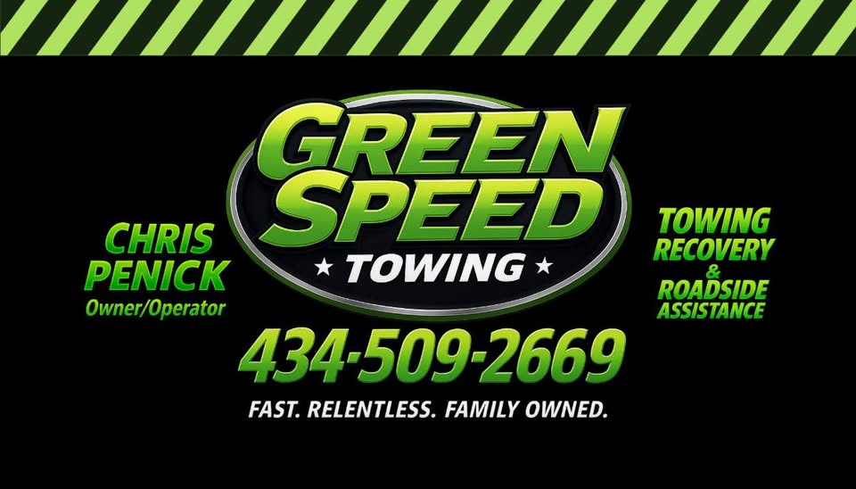
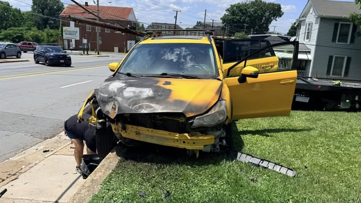

THE NEW STANDARD
IN RECOVERY.
4.7/5 Rating
CUSTOMER REVIEWS
Locally owned
Green Speed Towing
9228 Wards Road local
Serving the community
SPECIALIZED RESPONSE
HEAVY DUTY RECOVERY
Logistical precision for industrial assets. Our specialized heavy-recovery units are engineered to manage massive loads with mechanical exactitude.
VIEW TECHNICAL SPECS arrow_right_alt
EXOTIC & FLATBED
White-glove transport for high-value assets. Zero-degree loading angles ensure the preservation of performance geometry for luxury and racing vehicles.
SERVICE DETAILS arrow_right_altRAPID RECOVERY
Immediate roadside intervention. Strategic dispatching and nimble units designed for fast extraction in high-traffic urban corridors.
VIEW DISPATCH MAP arrow_right_alt
"WHEN SPEED IS THE ONLY METRIC THAT MATTERS."
Visit us
9228 Wards Road, Rustburg, VA 24588
STRATEGIC
DOMINANCE.
Our network covers every major arterial route with precision node placement. Wherever the failure occur, our technical units are positioned for sub-15-minute intercept.
METRO COVERAGE
98.4% Intercept Probability